A letter, just for you
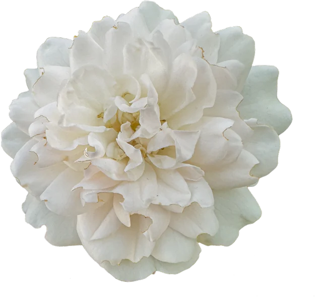
לחצו לפתיחה
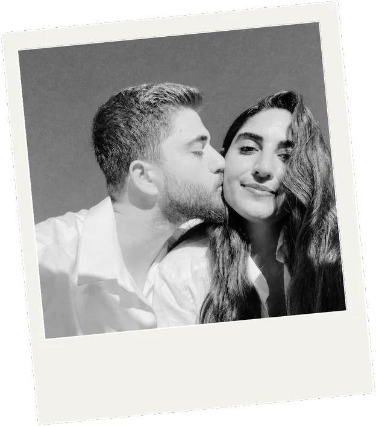
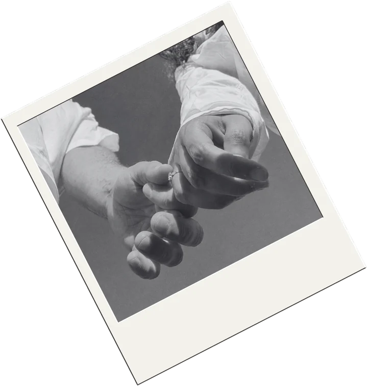
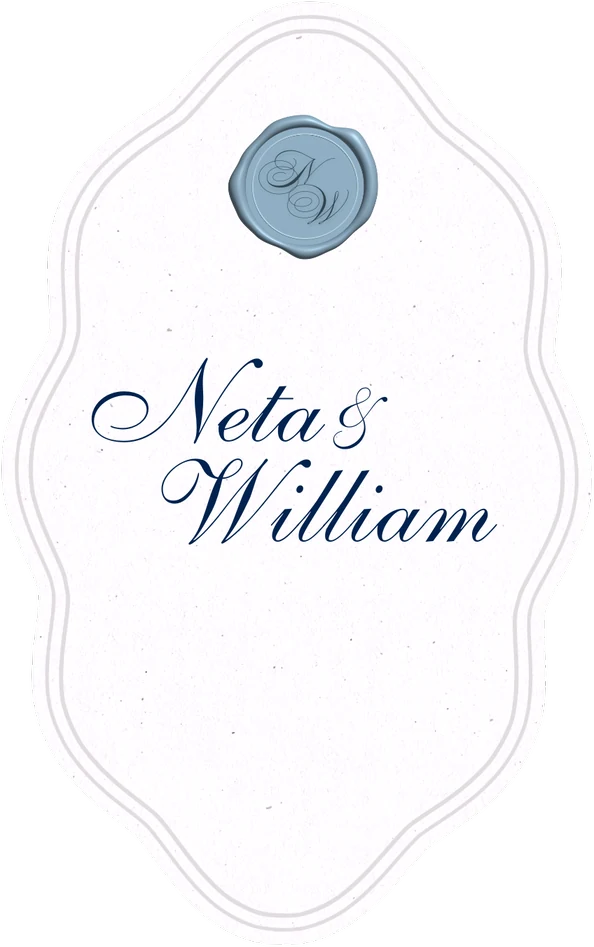
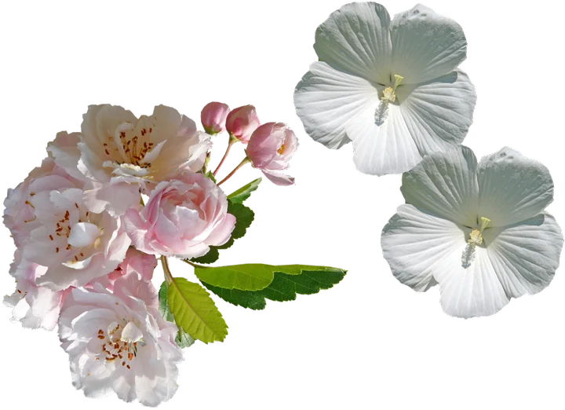
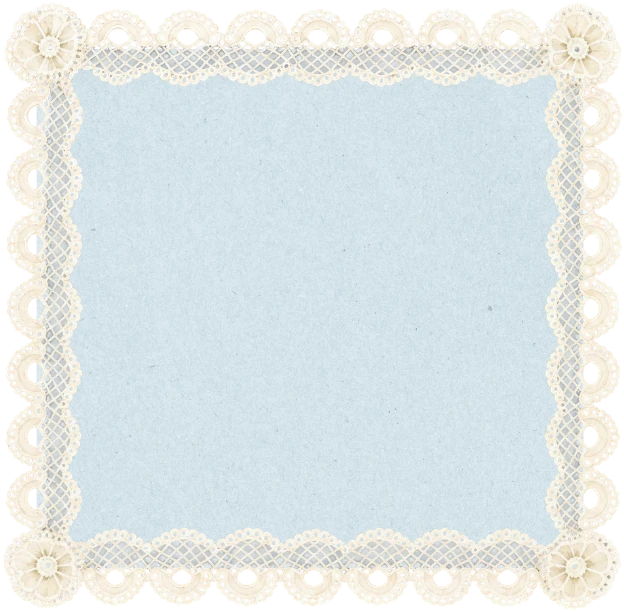
נטע וויליאם
אנו שמחים ונרגשים להזמינכם לחתונתנו שתערך בתאריך
ב׳ בניסן תשפ״ז התשיעי לאפריל 2027 בחוות אלנבי
קבלת פנים
11:30
חופה וקידושין
12:30
נשמח לראותכם בין אורחינו,
הורי החתן,
אינס וסלבה
וינטרמן
הורי הכלה,
חיה וירון
טל
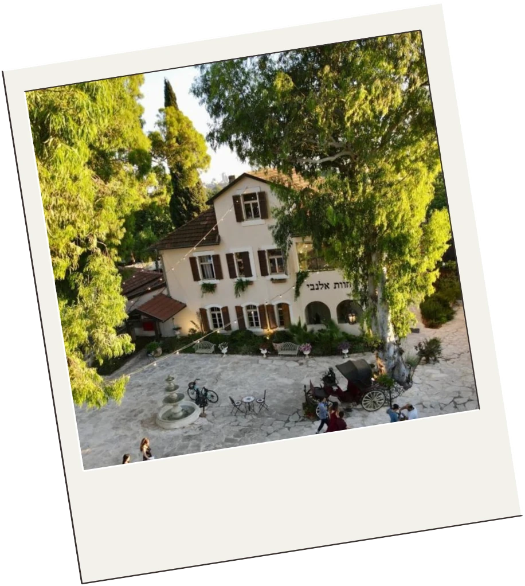
לחצו כאן לניווט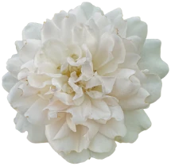
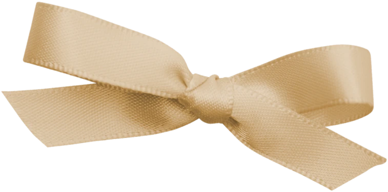
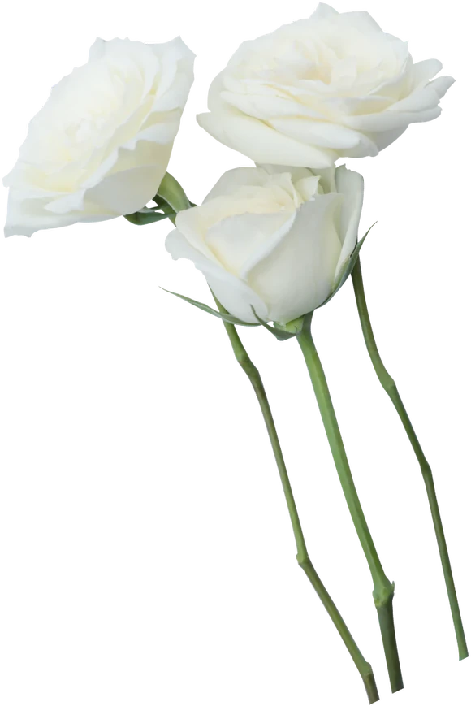
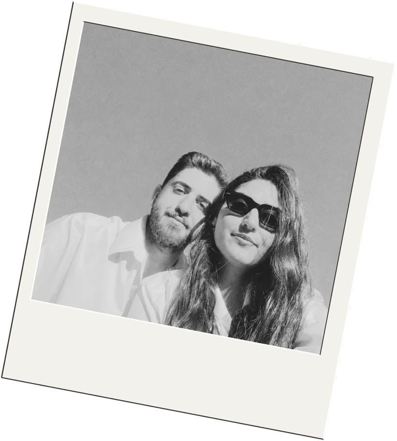
לחצו כאן להשראה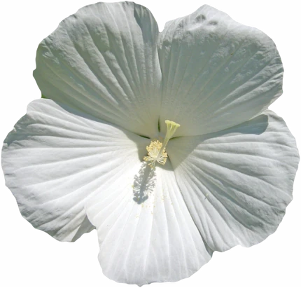
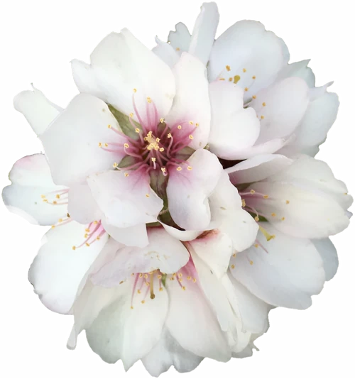
קוד לבוש:
אביבי וצבעוני
אפשר להשקיע, זו לא חתונת טבע